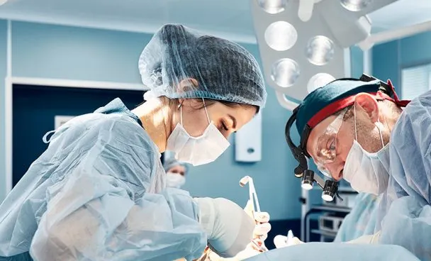

Cirugía General
Procedimientos quirúrgicos básicos para tratar enfermedades del abdomen, piel y tejidos blandos.
Más información
Cirugía Laparoscópica
Cirugías mínimamente invasivas con pequeñas incisiones y rápida recuperación.
Más información
Cirugía Plástica
Mejora estética y reconstructiva de la piel y tejidos.
Más información
Neurocirugía
Tratamiento quirúrgico de enfermedades del cerebro, columna vertebral y sistema nervioso.
Más información
Cirugía Cardiovascular
Operaciones del corazón y vasos sanguíneos.
Más información
Cirugía Ortopédica
Cirugías para tratar fracturas, lesiones articulares y problemas musculoesqueléticos.
Más información
Cirugía Pediátrica
Procedimientos quirúrgicos especializados en niños.
Más información

Cirugía Oncológica
Tratamiento quirúrgico de tumores y cánceres.
Más información
Cirugía Maxilofacial
Operaciones en el rostro, boca y mandíbula.
Más información
Cirugía de Mano
Procedimientos en manos, muñecas y nervios asociados.
Más información
Cirugía Torácica
Cirugías de pulmón, esófago y otras estructuras del tórax.
Más información
Cirugía Bariátrica
Procedimientos para tratar la obesidad, como el bypass gástrico.
Más información
Cirugía Reconstructiva
Restauración de estructuras dañadas por traumatismos o enfermedades.
Más información
Cirugía Urológica
Tratamiento quirúrgico de enfermedades del sistema urinario y reproductor masculino.
Más información
Cirugía Ginecológica
Procedimientos quirúrgicos del aparato reproductor femenino.
Más información
Cirugía Otorrinolaringológica
Cirugías de oído, nariz y garganta.
Más información
Cirugía de Trasplantes
Trasplante de órganos como riñón, hígado y corazón.
Más información